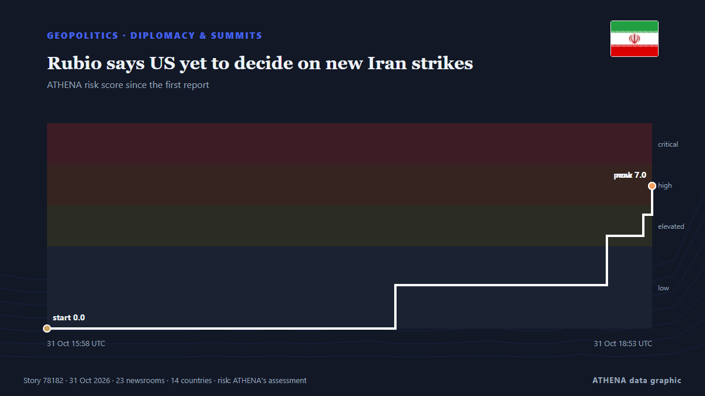

Rubio says US yet to decide on new Iran strikes

ATLANTA: US President Donald Trump has not made a decision about fresh strikes on Iran amid stalled peace talks, US Secretary of State Marco Rubio said Saturday. de Business Recorder
Relayé de façon indépendante par 24 médias dans 14 pays depuis le 28 oct. ; premier à l'annoncer : The Maritime Executive ; la couverture continue de s'étendre. ATHENA juge le risque élevé (7.0/10), surtout en raison de la gravité des dommages décrits et du rythme de la couverture, contre 0.0 il y a 24 heures. La confiance est de 91 % (élevée) : 24 médias indépendants le confirment, avec une fiabilité moyenne des sources de 77 %. Médias par pays : États-Unis (6), Azerbaïdjan (5), Russie (5). Couverture : du 28 oct. au 31 oct., 71 heures.
Pourquoi c'est important: Les évolutions de sécurité et de diplomatie peuvent déplacer alliances, échanges et marchés bien au-delà des pays directement concernés.
Ce qui a changé : 28 nouveaux articles de 17 rédactions dans les 24 heures jusqu'au 31 oct..
Premier titre : Secretary of State Marco Rubio at the G20 Foreign Ministers’ Meeting Welcome Reception
Les titres sont affichés en anglais, tels que publiés.
En un coup d'œil
Sélectionné, noté et rédigé par la méthodologie publiée d'ATHENA. Aucun rédacteur n'intervient sur un événement en particulier. Comment il est produit ›
| 28 Oct 19:21 UTC | 1 |
|---|---|
| 28 Oct 22:21 UTC | 0 |
| 29 Oct 01:21 UTC | 0 |
| 29 Oct 04:21 UTC | 0 |
| 29 Oct 07:21 UTC | 0 |
| 29 Oct 10:21 UTC | 0 |
| 29 Oct 13:21 UTC | 0 |
| 29 Oct 16:21 UTC | 1 |
| 29 Oct 19:21 UTC | 0 |
| 29 Oct 22:21 UTC | 1 |
| 30 Oct 01:21 UTC | 0 |
| 30 Oct 04:21 UTC | 1 |
| 30 Oct 07:21 UTC | 2 |
| 30 Oct 10:21 UTC | 0 |
| 30 Oct 13:21 UTC | 0 |
| 30 Oct 16:21 UTC | 1 |
| 30 Oct 19:21 UTC | 2 |
| 30 Oct 22:21 UTC | 0 |
| 31 Oct 01:21 UTC | 0 |
| 31 Oct 04:21 UTC | 3 |
| 31 Oct 07:21 UTC | 0 |
| 31 Oct 10:21 UTC | 2 |
| 31 Oct 13:21 UTC | 4 |
| 31 Oct 16:21 UTC | 17 |
| 31 Oct 15:58 UTC | 0.0 |
|---|---|
| 31 Oct 17:39 UTC | 2.1 |
| 31 Oct 18:40 UTC | 4.5 |
| 31 Oct 18:51 UTC | 5.5 |
| 31 Oct 18:53 UTC | 7.0 |
| 31 Oct 18:55 UTC | 7.0 |
Pourquoi ces chiffres
Importance
Risque
Confiance
La couverture : qui l'a annoncé, et quand
titre tel que publié · ouvre l'original- The Maritime Executive · États-UnisAs Midterms Approach, Signs of Impending Return to Open Conflict With Iran
- The Hill · États-UnisEconomy, healthcare, Iran war top voters' concerns ahead of midterms: Gallup
- The Jerusalem Post · IsraëlSaudis ask Trump to 'give diplomacy a chance' on Iran prior to military option, sources tell 'Post'
- City A.M. · Royaume-UniAs it happened: FTSE 100 loses steam; oil up as US considers Iran strikes
- NPR World · États-UnisAfter monthslong pause, U.S. could renew conflict with Iran after midterms
- New York Times Business · États-UnisWhy the Markets Don’t Care About the Midterms
- Tehran Times · IranTrump’s falling popularity hangs over a midterm vote shaped by Iran war, inflation
- Atlantic Council · États-UnisUkrainians are not fighting for Zelenskyy. They are fighting for national survival.
- Türkiye Today · TurquieTurkish FM Fidan meets Rubio as Zelenskyy prepares for Türkiye visit
- APA (English) · AzerbaïdjanFactor that could prompt Trump to resume war against Iran revealed
- Türkiye Today · TurquieBad midterms could push Trump toward major Iran strike: Report
- Arab Times · KoweïtPoor Midterm Results Could Trigger Major Trump Strikes on Iran: Report
- Express Tribune · PakistanTrump says Russia-Ukraine deal could be near ahead of December’s G20 summit
- APA (English) · AzerbaïdjanUkrainian President Zelenskyy visits Türkiye
- APA (English) · AzerbaïdjanTurkish President received Ukrainian President
- APA (English) · AzerbaïdjanTrump does not rule out signing of Russia-Ukraine peace agreement at G20 summit
- The Jerusalem Post · IsraëlIsrael prepares for possible Iran escalation as US delays military action until after midterms
- Ukrainska Pravda (English) · UkraineZelenskyy and Erdoğan discuss involving Türkiye in negotiations to end war
- Business Recorder · PakistanRubio says US yet to decide on new Iran strikes
- Haaretz (English) · IsraëlTrump yet to decide on Iran strikes, U.S. open to diplomacy, Rubio says
- Ukrainska Pravda (English) · UkraineRubio says Zelenskyy may be invited to G20 summit
- The Jerusalem Post · IsraëlTrump 'has not made a decision' on Iran, Rubio tells press
- Anadolu Agency (English) · TurquieRubio says Iran talks have never stopped, stresses US preference for diplomacy
- Kurdistan24 (English) · IrakUS Secretary of State: No Decision on Iran Strikes
- Al-Monitor · États-UnisUS sees growing interest in limited ceasefire in Black Sea
- TASS (English) · RussieTrump to decide later on whether to invite Zelensky to G20 summit — Rubio
- TASS (English) · RussieTurkey submits Black Sea grain shipping proposals to US — Rubio
- Asharq Al-Awsat (English) · Arabie saouditeRubio Says US Yet to Decide on New Iran Strikes
- Vanguard · NigeriaUS yet to decide on new Iran strikes, says Rubio
- TASS (English) · RussieRubio, Lavrov discuss possible Putin-Trump meeting on APEC sidelines
- Kyiv Independent · Ukraine'I don't know if negotiated peace is achievable,' Rubio says as uncertainty hangs over Russia-Ukraine talks
- TASS (English) · RussieUS not claiming negotiated Ukraine settlement anywhere close — Rubio
- TASS (English) · RussieTrump considers Russia’s participation in G20 discussions important — Rubio
- APA (English) · AzerbaïdjanUS Secretary of State: Trump made no decision to resume war with Iran
- Yonhap (English) · Corée du SudTrump open to talks with N. Korean leader but no meeting scheduled: Rubio